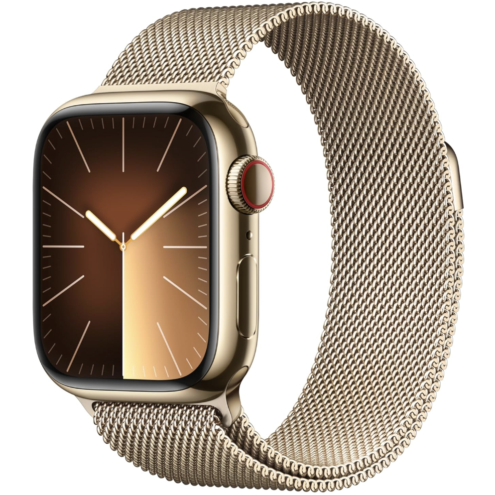

APPLIANCES / WATCHES
"Think different"
APPLE WATCH
 VIEW LARGER PICTUREStay connected, active, and in control with the Apple Watch.
Track your workouts, monitor your heart rate, and receive real-time notifications right on your wrist. The Apple Watch helps you stay motivated to move, exercise, and stand throughout the day while keeping an eye on your overall health. With features like sleep tracking, emergency SOS, and seamless connection to your iPhone, it ois designed to make life easier, healthier, and more connected. Sleek, stylish, and smart — the Apple Watch is your ultimate everyday companion.
- Monitors your heart rate and alerts you to irregular rhythms.
- Measures your blood oxygen level and sleep quality.
- Sends real-time notifications for calls, messages, and apps
- Includes built-in GPS for outdoor runs and cycling.
- Water-resistant and perfect for swimming
- Features emergency SOS and fall detection for safety.
- Connects seamlessly with your iPhone and AirPods.
- Supports Siri for quick voice commands.
- Offers customizable watch faces and interchangeable bands.
- Sleek, lightweight design with durable materials.
- Long-lasting battery and fast charging capability.
| Model | Description | Price |
| Apple Watch Series 11 | Latest flagship: latest chip, advanced health sensors (heart, blood oxygen, etc.), always-on display, improved battery & connectivity | US$399 |
| Apple Watch SE 3 | Entry level but upgraded: newer chip, always-on display, some health features, more affordable | US$249 |
| Apple Watch Ultra 3 | Designed for more rugged/adventurous use: stronger build, better battery, more premium features. | US$799 |